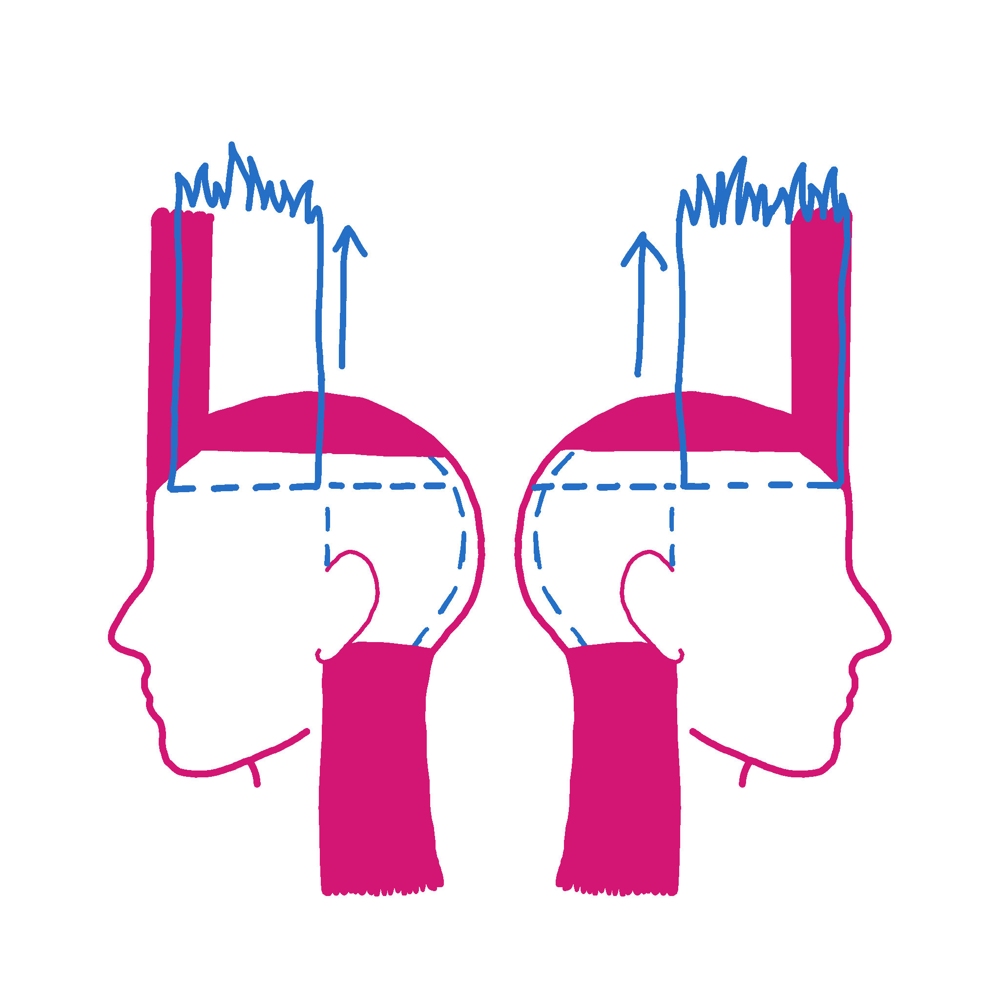
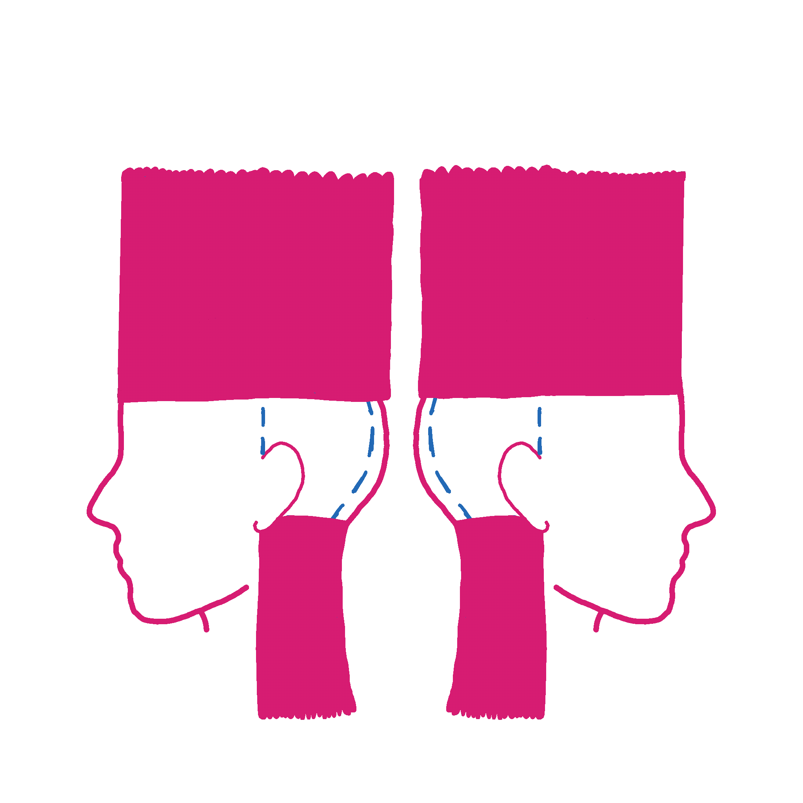

Take another horizontal one inch section out from underneath the one you just cut. Comb all these peices upwards at a 90 degree angle. Working your way through the section, trim to the previously cut section.
(scroll to see demo)
When you have completed this new section & drop it down, you will begin to see the layers form.
next